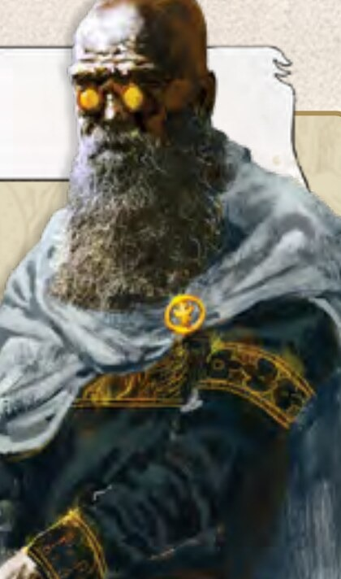
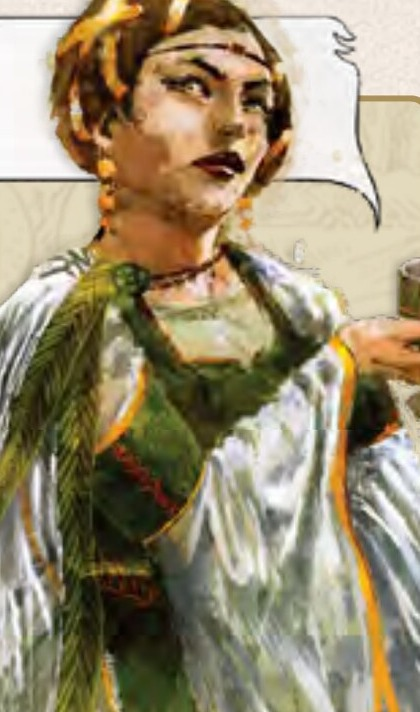
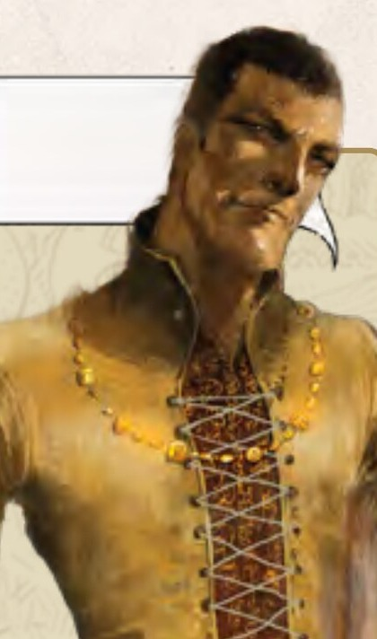
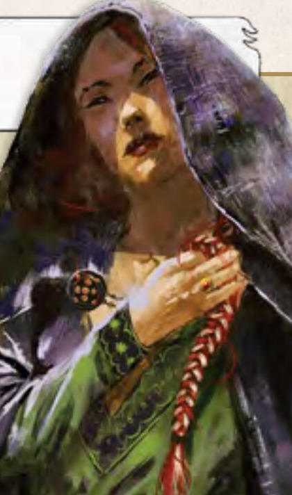
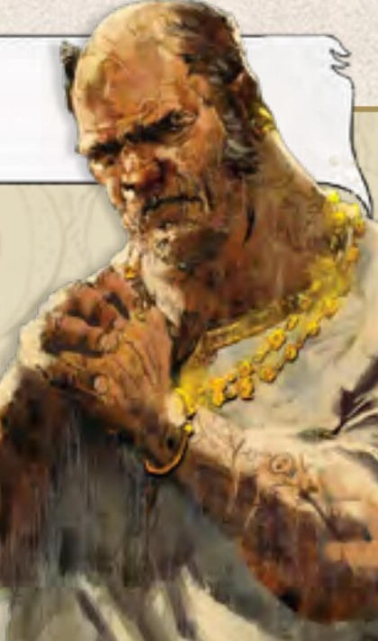
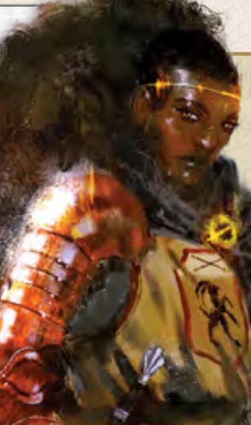

THE QUEEN'S DILEMMA
Die Tagebücher
Sechs Häuser, sechs Geschichten
Jede Figur hat ein eigenes Diary. Darin steht, was die Figur ausmacht, woher sie kommt und wie sie zur Königin steht. Lies deine eigene Figur vor dem ersten Spiel gründlich. Die anderen fünf lohnen sich auch, denn sie sitzen dir am Tisch gegenüber.
Hinter jedem Namen steht eine gepunktete Linie, wie im Diary. Dort kommt der Name deines Hauses hin. Überleg dir bis zum ersten Spiel einen, er wird dann eingetragen.
Die Texte sind wörtlich aus den Diaries abgeschrieben und deshalb auf Englisch, wie das Spiel.
1 · © Horrible Games SRL · inoffizielle Abschrift

AesyasName deines Hauses
The Silver Quill
 Progress
Progress Diplomacy
Diplomacy
The trained mind can bend the future.
Wer du bist
As the kingdom’s most famous and respected scholar, your name is synonymous with intellect and discovery. Methodical, poised, and deeply pensive, you live for the thrill of new understanding, believing that only through relentless innovation and reason can a brighter future be forged. The secrets of both past and future captivate you, drawing you ever closer to knowledge that can unravel outdated values or lead to dangerous, yet necessary, truths. Those who cling to old superstitions and traditions strike you as weak, foolishly sentimental, and blind to progress. In your view, true power belongs to those who master their intellect, wielding it to illuminate the path forward.
2 · © Horrible Games SRL · inoffizielle Abschrift
AesyasThe Silver Quill
Woher du kommst
Born into a noble family with a storied tradition of research and scholarship, you are deeply committed to the pursuit of knowledge, convinced that true greatness stems from the cultivation of the mind. Your relentless dedication has led you to amass an unparalleled library, known throughout the known world as the largest and most comprehensive collection of written works. Within these grand halls of learning, you command a circle of devoted scholars who work tirelessly under your guidance, uncovering the forgotten secrets of the world and pushing the boundaries of discovery.
Du und die Königin
Appointed as young Serena’s tutor, you were tasked with tempering her undisciplined spirit. With patience, you guided her toward history, rhetoric, and strategy, hoping to shape her into a capable ruler. Initially, Serena resisted, preferring swordplay over scrolls, but she soon came to value your wisdom. Now, she trusts you implicitly, choosing you as a top advisor on her Council.
3 · © Horrible Games SRL · inoffizielle Abschrift

ElinorName deines Hauses
The Herald of the Past
Tradition Order
Order
Truth lies in blood.
Wer du bist
Your lineage is said to be as ancient as the kingdom itself. Throughout Ankist’s many trials, your bloodline has played a pivotal role, standing as a cornerstone of its history. Proud of your heritage, you are devoted to preserving your family’s legacy and securing its place in the new Ankist.
Resolute and steadfast, you view compromise as weakness, for your convictions are grounded in eternal truths. Revered by the Cult for your deep faith and devotion to ancestral wisdom, you stand as a guardian of the old ways, ensuring the past guides the kingdom’s future.
Your loyalty to tradition is more than a belief—it is a defining strength, shaping your influence and securing your place as a stalwart pillar of Ankist’s destiny.
4 · © Horrible Games SRL · inoffizielle Abschrift
ElinorThe Herald of the Past
Woher du kommst
You share your family’s honor with your twin brother, Theon. Bound by a harsh upbringing where each of you was punished for the other’s misdeeds, you both learned to always have each other’s backs. Rash and impulsive, Theon chose the path of a valiant knight, leaving the command of the House to your calculated leadership. While he thrives on the battlefield, you navigate the complexities of power, ensuring that both of you uphold the legacy of your family.
Du und die Königin
Queen Serena holds your family in high esteem, recognizing the enduring influence your name commands among the nobility. It was only fitting, then, that she chose you to serve on the Council, entrusted with the vital task of maintaining her rule in her absence. Your family’s legacy and influence are intertwined with the kingdom’s destiny, solidifying your place among the realm’s most powerful decision-makers.
5 · © Horrible Games SRL · inoffizielle Abschrift

JilianName deines Hauses
The Silk Weaver
DiplomacyTradition
A silver tongue dulls the iron sword.
Wer du bist
You are mercurial and unpredictable, driven by your own interests and whims. You revel in being the center of attention, thriving on whispers and gossip—whether it’s praise or condemnation. A master of diplomacy and deception, you weave intricate webs of schemes, leaving even your closest allies questioning whether you have any coherent plan at all. To you, brute force is the tool of fools; the power of words can achieve far more, far better. Your position as a Councilor is a privilege you hold dear, and you cherish the grandeur of the past and and your Ankistan heritage, viewing it as far superior to the crude ways of the present.
6 · © Horrible Games SRL · inoffizielle Abschrift
JilianThe Silk Weaver
Woher du kommst
Hailing from an ancient lineage teetering on the brink of ruin, you restored your family’s fortunes through your unmatched skill in political negotiation. Now, as a secured Councilor, your focus shifts to building a vast network of spies, allowing you to grasp the intricate power structures of the court. With this web of influence, you will ensure that all who dwell within its halls—nobles and commoners alike—fall under your sway, cementing your control over the realm’s politics.
Du und die Königin
During the turbulent Age of Disorder, your deft handling of diplomacy and intrigue was crucial in shielding the realm from countless threats. Recognizing your indispensable talents, Queen Serena has appointed you to the Council. Though she doesn’t fully trust you, your independent spirit, unpredictability, and undeniable charm have captivated her, making you both an asset and a mystery in her eyes.
7 · © Horrible Games SRL · inoffizielle Abschrift

LyrieName deines Hauses
The Visionary Patron
 LibertyProgress
LibertyProgress
Freedom breathes through art.
Wer du bist
An idealist and visionary, you believe deeply in the boundless power of art to reveal the hidden truths of reality. To you, science, art, literature, and music are pathways to explore the vast world beyond what our senses can grasp. Art, in your eyes, is a universal language that transcends barriers, guiding society toward enlightenment and liberation from the chains of tradition and restraint. You dream of a society continually transformed and uplifted by its engagement with art and expression, always marching toward a brighter, more enlightened future. Those who cling to the past seem to you like moths circling a dying flame, unaware of the dawn just beyond.
8 · © Horrible Games SRL · inoffizielle Abschrift
LyrieThe Visionary Patron
Woher du kommst
Born into a distinguished family, you are a respected politician and powerful cultural figure, holding sway over the artistic scene and redefining the cultural landscape of a new Ankist. You are the visionary founder and patron of Freedomism, a groundbreaking art movement devoted to free expression, provocation, and the rejection of traditional norms. Freedomism’s provocative style has sparked both admiration and disdain—unpopular with traditionalists and the Cult but fervently championed by progressive Ankistan nobles. At the heart of the movement stands Tanais, a controversial yet brilliant artist whose works lay bare the raw reality of societal injustices, often casting a critical lens on abuses of power against the vulnerable.
Du und die Königin
As an idealist with a keen understanding of politics and a trendsetter, Queen Serena saw you as an influencer of minds, and thought she could use the power of your art to bolster her rule. This position grants you the political influence needed to turn your artistic vision into reality, aligning the kingdom’s future with your ideals of liberty and progress.
9 · © Horrible Games SRL · inoffizielle Abschrift

SydName deines Hauses
The Feral
 ForceLiberty
ForceLiberty
Power resides in the will to take it.
Wer du bist
Distrustful and fiercely independent, you see the world as a battleground where power is the only true currency. While others deem your methods dishonorable, you know that true power requires stepping into the shadows where others fear to tread. Laws, to you, are merely tools the powerful use to feign morality and control the weak.
Unapologetic in your pursuit of strength, you command the loyalty of those who resent the nobility yet aspire to rise within its ranks. To them, you are not just a leader but a living example of how to claim what others dare not seize. Survival and power demand ruthless cunning—and you are more than willing to embrace it. You thrive in the shadows, maintaining ties with questionable dealings and seeing opportunity where others see danger.
10 · © Horrible Games SRL · inoffizielle Abschrift
SydThe Feral
Woher du kommst
Once a low-key noble, you used to make small profits through the trade of the infamous Ash Bread, a mysterious compound that allows the eater to see glimpses of impending future violence. But your ambition drove you to carve out a greater place in the world. You spent your entire fortune to host a lavish feast for the region’s largest producers and dealers. Under the veil of opulence, you poisoned your guests to death, seizing control of the ash bread trade in an infamous event known as the “Brothers’ Banquet.” Stricken by fear of retaliation, you nearly became addicted to the bread, but had to quit as its effects fueled your paranoia.
Du und die Königin
Too dangerous to be excluded from the Council, Queen Serena knew she had to bring you into the fold. In you, Serena sees a councilor unafraid to wield power decisively, no matter the cost.
11 · © Horrible Games SRL · inoffizielle Abschrift

XantheName deines Hauses
The Crimson Shield
OrderForce
Strength is the most reliable weapon.
Wer du bist
Strong, courageous, and fiercely loyal, you have been hailed as one of the bravest soldiers in the kingdom. As a newly elevated noble of Enkhali descent, you are twice an outsider among the elite of Ankist. Blunt and straightforward, you hold a firm belief in the power of force—rooted in the Askadar, the military discipline all Enkhali are trained in from childhood. To you, leadership and decisive rulings create true order—and true order brings true strength. Never one to back down from confrontation, you welcome every chance to test your valor in combat, for force is often the final and most honest arbiter of truth. A challenge of strength, after all, is far more straightforward than the duplicitous games of politics. But in both, no price is too high for victory.
12 · © Horrible Games SRL · inoffizielle Abschrift
XantheThe Crimson Shield
Woher du kommst
While most Enkhali retreated to their mountain strongholds, your ancestors chose to remain in Ankist, serving as Royal Guards to the crown. This decision forged a lifelong bond. You became the closest friend of the young Serena, and when an assassin attempted to take her life, it was your quick action that saved her. Upon ascending the throne, Serena honored this friendship by elevating you to nobility, a privilege never before seen by an enkhali in Ankist. However, this unexpected rise has earned you the suspicion and resentment of those you now govern, leaving you in a constant battle to prove your right to rule. As a fierce enkhali warrior, your iconic red iron armor is the thing you cherish most, since all those who abandon the war attire also forfeit the prestigious rank of warrior and bring dishonor to their name.
Du und die Königin
Serena holds you in deep affection, seeing you as the older sister she never had. Now, as she battles in Konfurtah, Serena counts on your unwavering friendship to protect her reign in her absence, trusting you to safeguard her throne and the stability of the kingdom.
13 · © Horrible Games SRL · inoffizielle Abschrift